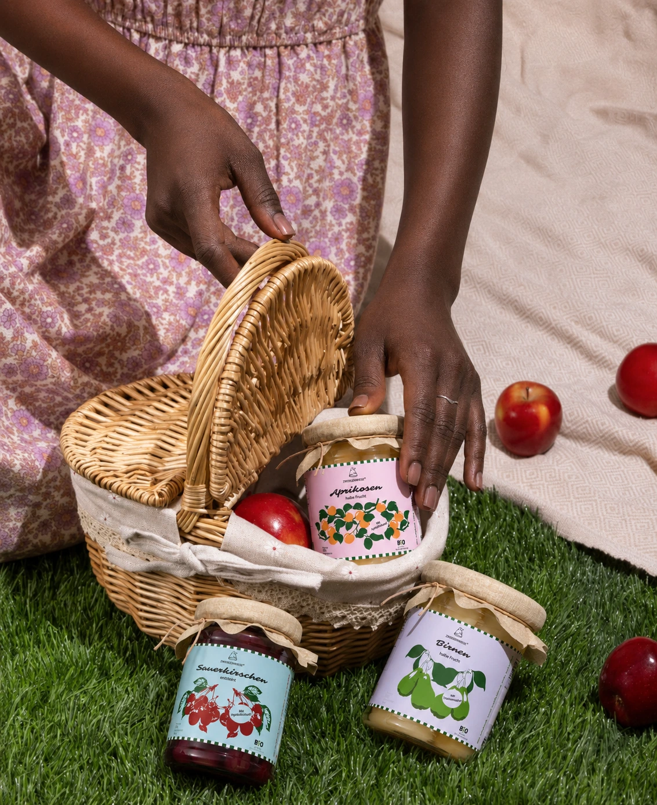
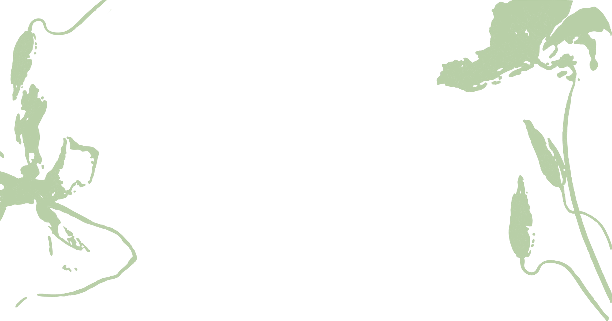
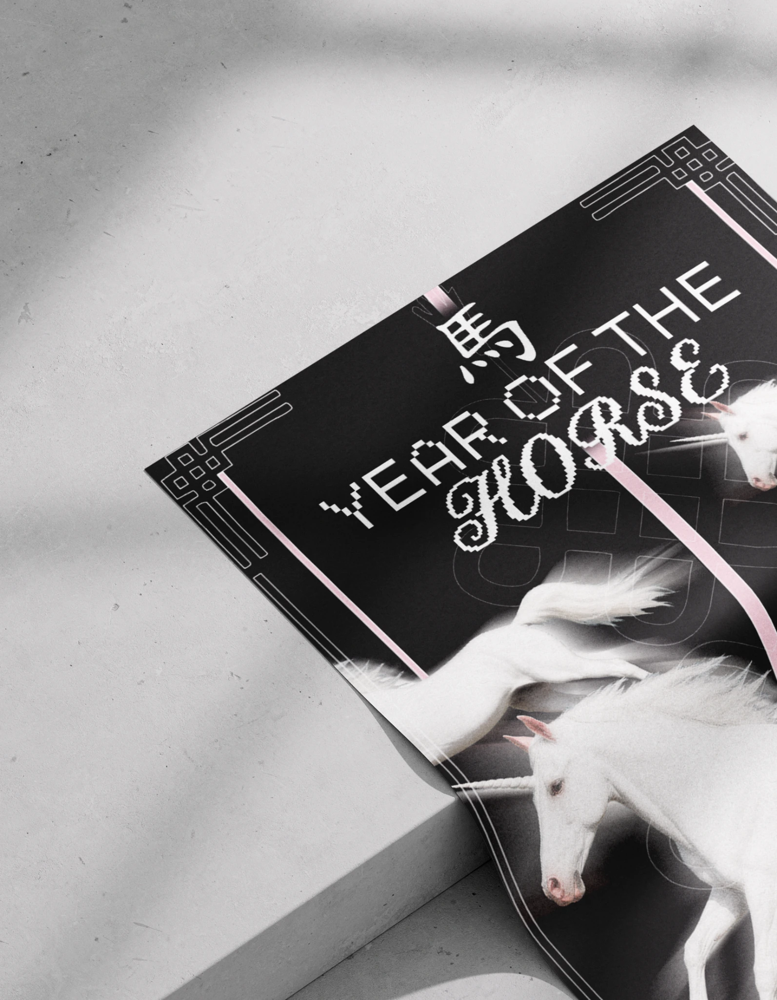
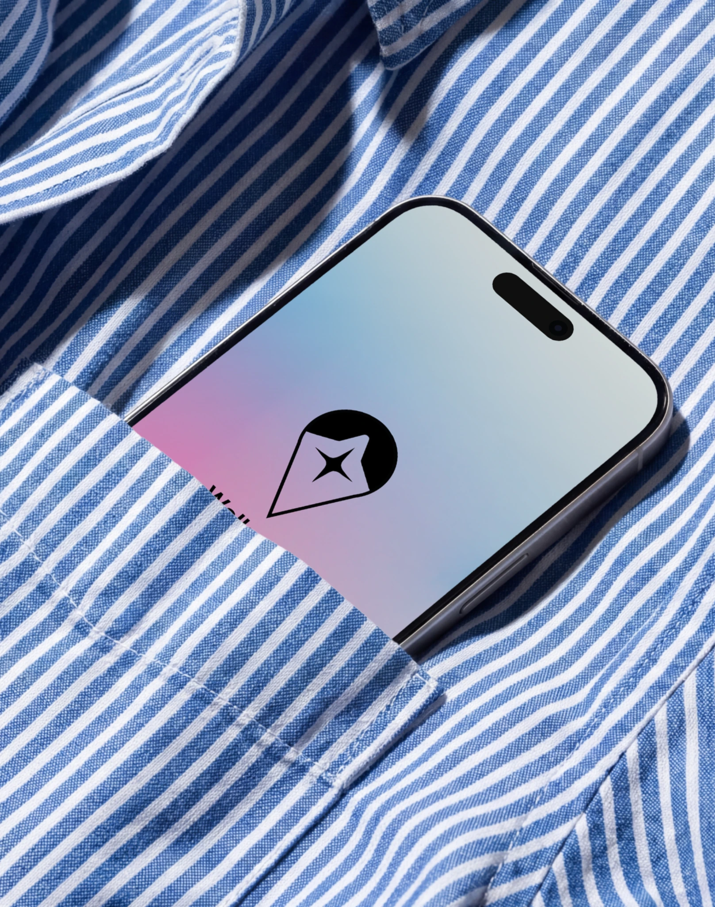
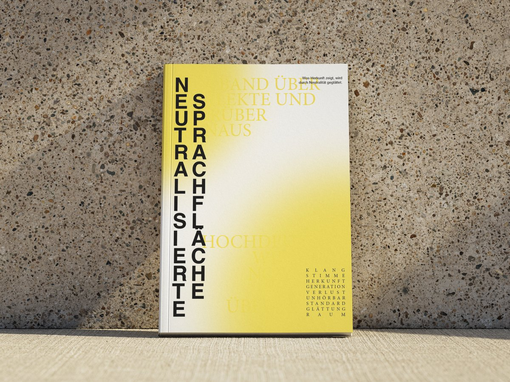
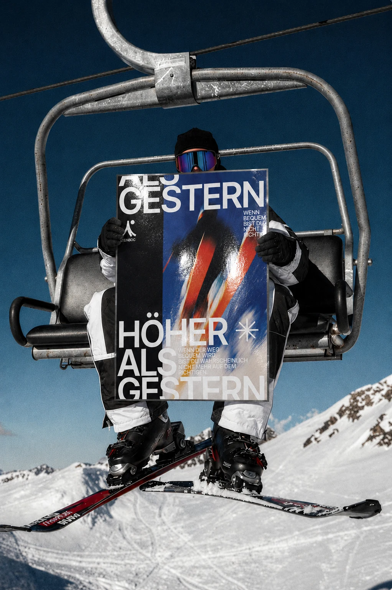
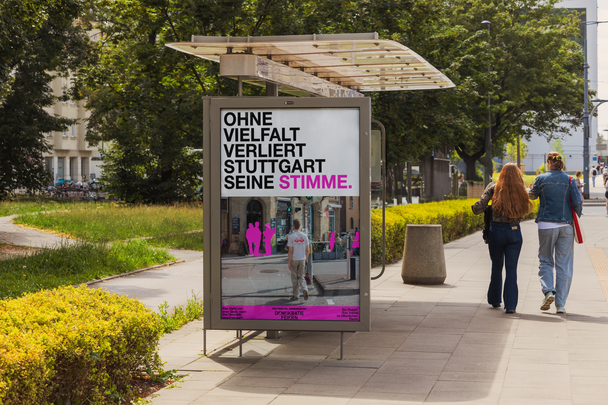
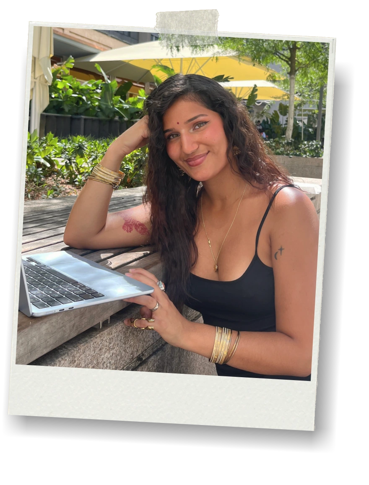
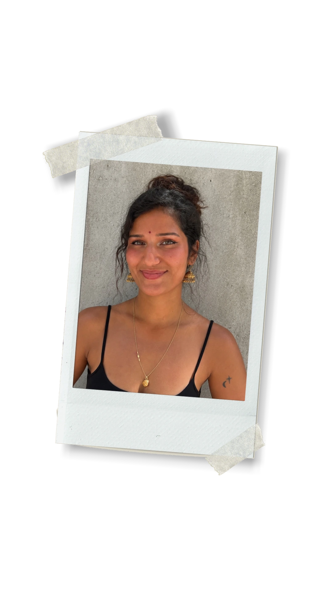

01ZwergenwieseBranding · Packaging · Freie Arbeit
Brief anklicken
Branding•Editorial•Typography•Identity•Campaign•Illustration•Photography•Print•Visual Communication•
Selected Work

02Lunar YearPoster Design · Freie Arbeit
03Walksafe+Digital · Smart Mobility · Semesterprojekt
04Neutralisierte SprachflächeTypografie · Editorial · 2. Semester
05SteinbocCorporate Design · Photography · 3. Semester
06Demokratie feiernCampaign · Poster Series · Art DirectionEin loses
Archiv.
Raster
01
2026 Calendar
02
Postkarten & Sticker
03
Alternative Stadtkampagne
04
40. Plakatwettbewerb Studierendenwerk
05
About Me
Still sitzen und nur eine Sache machen war noch nie so meins. Ich liebe es, Neues auszuprobieren, mich in Ideen zu verlieren und aus einem „Ich schau nur mal kurz“ ein komplett neues Projekt zu machen.


Ich studiere Visuelle Kommunikation an der Fakultät für Gestaltung in Pforzheim und komme bald ins vierte Semester. Besonders gerne entwickle ich Brandings, aber ehrlich gesagt kann ich mich für ziemlich alles begeistern, bei dem ich gestalten und ausprobieren kann.
In meinen Projekten arbeite ich gern konzeptuell und visuell zugleich: erst verstehen, was eine Marke, ein Thema oder ein Format braucht, dann ein System entwickeln, das wirklich trägt. Dabei entstehen Logos, Layouts, Bildwelten, Farben, Typografie und Anwendungen, die zusammen funktionieren und trotzdem genug Eigenleben haben. Ich mag Gestaltung, die klar ist, aber nicht brav. Was bei mir deshalb oft auftaucht: starke Typografie, mutige Farben und Ideen, die man nicht übersehen kann.
Aufgewachsen bin ich zwischen Deutschland und Indien, mittlerweile lebe ich mit meinem Freund und unseren zwei Katzen in Stuttgart. Wenn ich nicht gerade an irgendeinem Entwurf sitze, backe ich gerne, interessiere mich für Botanik oder stehe ab und zu selbst vor der Kamera. Ganz ohne Gestaltung geht's aber auch in der Freizeit nicht, dafür probiere ich einfach zu gerne Neues aus. Meine Katzen sind meistens mit am Start, mit konstruktivem Feedback halten sie sich aber eher zurück.